A tutorial on how to setup a web server on your local computer using docker:
Step 1: Install Docker Engine
https://docs.docker.com/engine/install/
https://docs.docker.com/get-docker/
Key-step: After the installation, you can run “docker run hello-world” to test your installation. Below is a screenshots when run this command successfully on Windows OS.
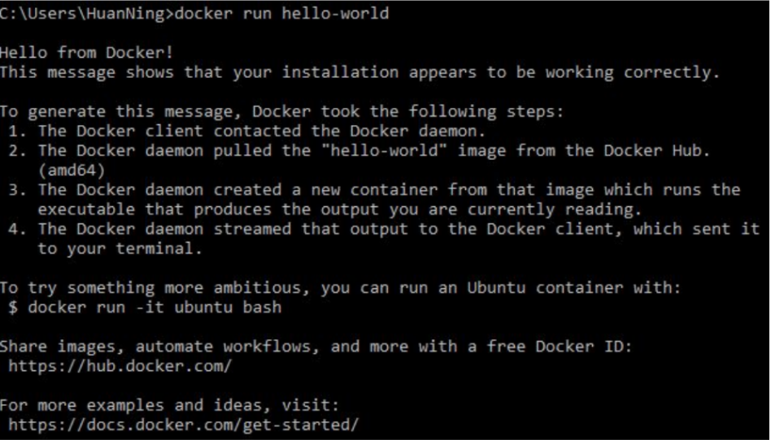
Step 2: Install Docker Engine
https://docs.docker.com/engine/reference/commandline/pull/
Key-step 1: After logging into Docker, you can run “docker pull ubuntu” in your command line window.

Key-step 2: Use “docker images” to check existing Docker images on your computer.
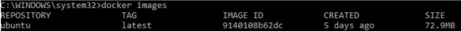
Step 3: How To Commit Changes To A Docker Image With Examples https://phoenixnap.com/kb/how-to-commit-changes-to-docker-image Note:“-it” of Docker brings you an interactive shell to communicate with the “virtual machine”.
Key-step 1: Run the Ubuntu image to start a Docker container, then log into this Ubuntu container:
Command: docker run -it ubuntu:latest /bin/bash
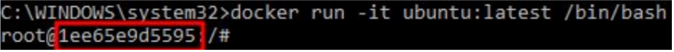
The container ID is “1ee65e9d5595” in the screenshot.
Key-step 2: Install applications in this Ubuntu container.
1) Update system using“apt-get update”.
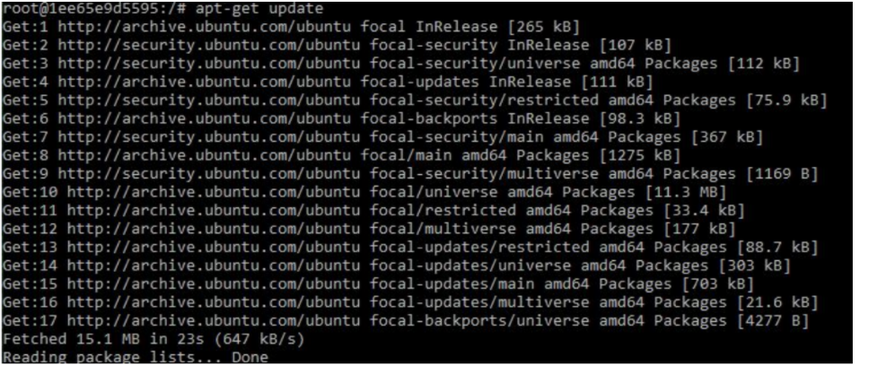
2) Install apache2 using “apt-get install apache2”.
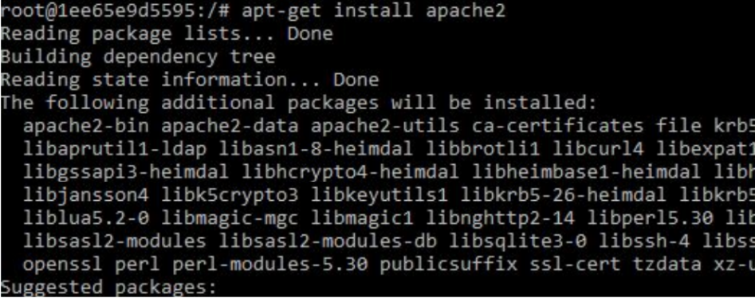
3) Install vim text editor using “apt-get install vim”.
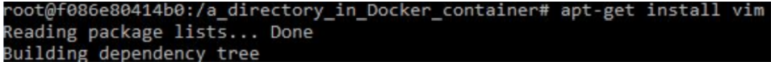
Key-step 3:Exit Ubuntu container.
1) Use command “exit”.
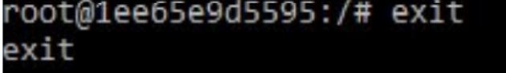
Key-step 4: Commit container to create a new Docker image.
1) Check the container using “docker ps -a”
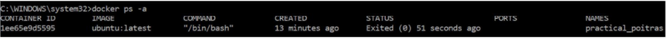
2) Create a new Docker image using “docker commit 1ee65e9d5595 ubuntu-my_apache2”. “1ee65e9d5595” is the container ID and “ubuntu-my_apache2” is the name of a new Docker image.
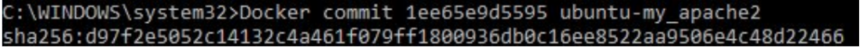
3) Check the news images using “docker images”.
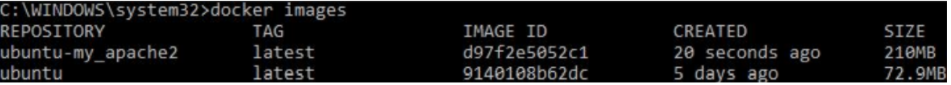
4. Docker Basics: How to Share Data Between a Docker Container and Host https://thenewstack.io/docker-basics-how-to-share-data-between-a-docker-container-and-host/
Using command “docker run -it -p 127.0.0.1:80:80 -v H:\Docker_tutorial\local_dir:/var/www/html ubuntu-my_apache2 /bin/bash”.
Parameter explanation:
1) -it: log into an interactive shell
2) -p: expose an port of Docker container.
3) -v: bind a host directory to Docker container. “H:\Docker_tutoiral\local_dir” is a directory of the host computer, and “/var/www/htm” is the default location for the entry webpage of a website. Usually we put “index. Html” is this directory.
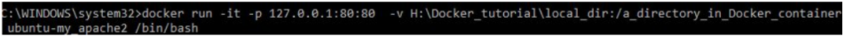
5. vi Editor in UNIX
https://www.geeksforgeeks.org/vi-editor-unix/
Vi index.html
Key step 1: check the present working directory using “pwd” then go the html directory “/var/www/htm” using “cd /var/www/html”
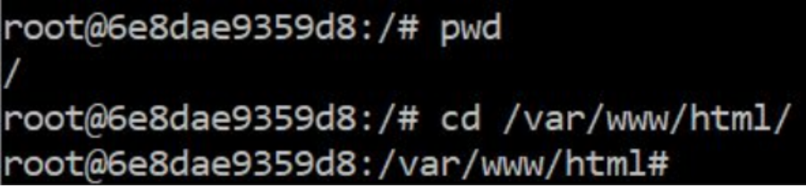
Key step 2: create an “index.html” file using “vi index.html”. Press “i” key to edit the new “index. Html” file. You can see “-- INSERT --” in the bottom of the command window, which means you can type html source code now. Try the shortcuts of vi to edit your file.
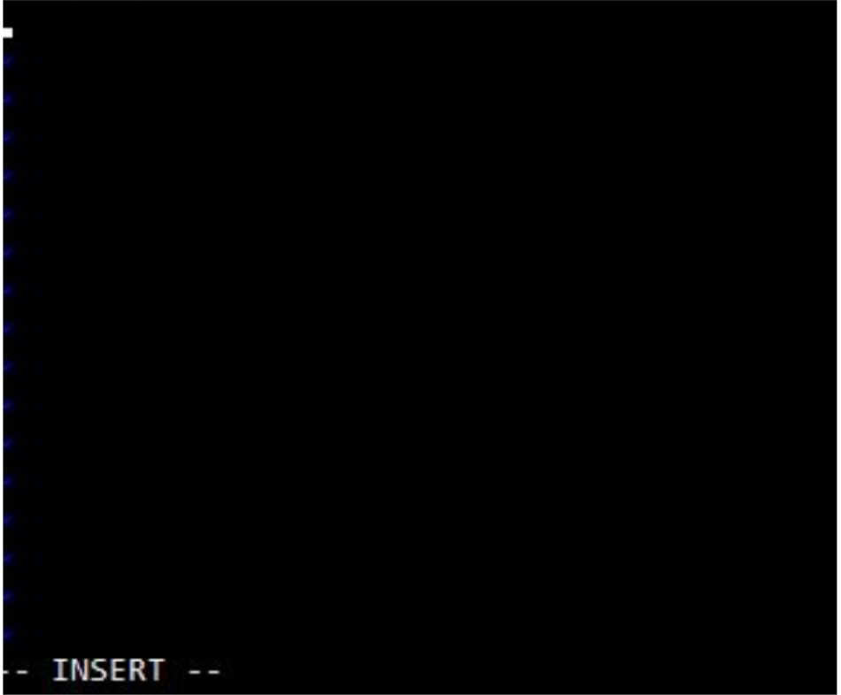
After finishing your “index.html” file, press the “ESC” key of your computer then type “:wq” to write the file and then quit vi.
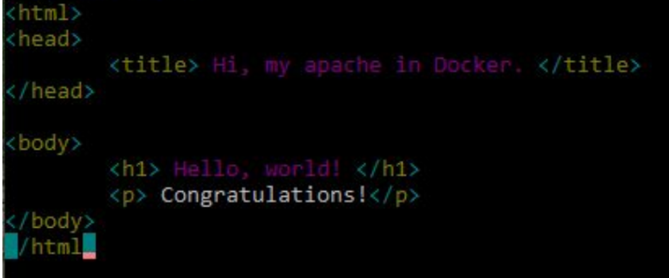
Meanwhile, you can find your “index.html” in your bind directory on your computer.
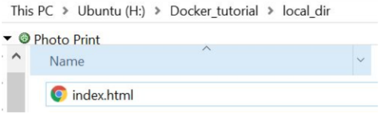
6. How to use Docker to host a website.
1) How To Start, Stop, Or Restart Apache Server On Ubuntu
https://phoenixnap.com/kb/ubuntu-start-stop-restart-apache
2) How to Run a Web Server from a Docker Container? Yes, I Know IT ! Ep 16 https://www.youtube.com/watch?v=okw7fOYHSeI
3) Learn Docker in 12 Minutes
https://www.youtube.com/watch?v=YFl2mCHdv24
Key step 1: Start apache service using “/etc/init.d/apache2 restart” in your Docker container.
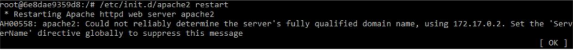
Using a browser of you host computer to access “127.0.0.1”, then you can see your website!.
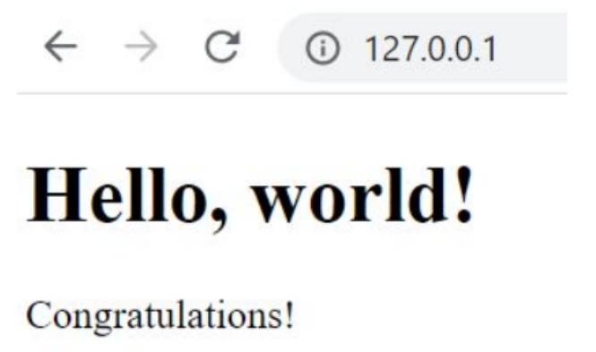